Dataset & benchmark · CAN-to-trajectory recovery · paper under review (2026)
CANTrajRecovering Vehicle Trajectories from CAN Signals in Naturalistic Driving
Remove the GPS and keep the CAN bus, and the route is still there: CANTraj pairs decoded CAN events with time-aligned GNSS tracks for thousands of naturalistic drives, and CANTraj-Bench measures how much of a trajectory six re-implemented published attacks and the benchmark's own baselines recover from the vehicle signals once one position is known.
3,940 drives from 454 pseudonymous drivers, re-decoded from aftermarket driver-assistance systems on the drivers' own cars; the benchmark scores 3,675 of them (431 drivers, 266 vehicle platforms, 1,380 hours, 85,919 km) cut into 98,972 episodes with explicit rules for signal sources, map access, missing outputs and driver-disjoint folds. With a road map, speed and steering, the offline beam search recovers 88 % of five-minute test routes at a median error of 37 m; without a map every CAN-only method drifts hundreds of metres within five minutes.
paper under review · 202698,972 episodes · 8 protocols6 published methods re-implemented
Corpus figures follow the paper: 3,940 drives of 454 drivers are the release and the benchmark scores 3,675 of them; the Hugging Face repository also holds a 48-drive controlled supplement (3,988 drives, 468 drivers).
01 · OVERVIEW
The CAN bus keeps the route that removing the GPS was meant to hide
What the dataset pairs, what the benchmark asks, and the three questions the study is organised around.
Usage-based insurance, fleet telematics, aftermarket driver assistance and public datasets collect wheel speed, steering angle, pedals and yaw rate from the CAN bus. Removing GNSS coordinates may look like location privacy, but the remaining signals can still reveal where a car travelled. Published route-inference attacks use different datasets, assumptions and success measures, so their results are hard to compare.
CANTraj pairs decoded CAN events with time-aligned GNSS trajectories at scale, and CANTraj-Bench defines one task, eight protocols, failure-aware metrics and driver-disjoint folds on which six re-implemented attacks and the benchmark's baselines are compared on the same drives. Three questions organise the study: which methods and signals work (RQ1), how prior information and trip duration change recovery (RQ2), and what limits accuracy, robustness and efficiency (RQ3).
02 · THE DATA · CANTRAJ
Decoded CAN events and GNSS tracks on one time axis
Naturalistic drives logged by aftermarket driver-assistance systems on the drivers' own cars, re-decoded into message tables and paired with the drive's GNSS track.
Each drive was re-decoded into time-stamped message tables (100 Hz where the full log was kept, 10 Hz where only the compressed log exists), with the drive's GNSS track on the same time axis and the opening and closing two minutes of every drive cut. The release holds 3,940 drives of 454 drivers; the Hugging Face repository also carries a 48-drive controlled supplement (3,988 drives, 468 drivers, 1,665 hours of trimmed track). The benchmark uses 3,675 drives of 431 drivers across 266 vehicle platforms of 27 brands.
The reference is a modem receiver at about 1 Hz on most drives and a u-blox receiver at up to 10 Hz on the rest, with a receiver-specific time lag (0.7 s modem, 0.2 s u-blox) estimated on the training fold and applied to every method alike. CANTraj was collected and processed in a similar way to DriveDNA, the lab's driving-style corpus, which itself carries no GPS coordinates; the two are related releases, not the same dataset.
3,940 drives · 454 drivers · the release
Paired CAN and GNSS for thousands of naturalistic drives, re-decoded from the drivers' own cars.
The release keeps 1,659 h of trimmed track across its 3,940 drives; with the 48-drive controlled supplement the repository holds 3,988 drives, 468 drivers and 1,665 h. Receivers and rates below are the dataset card's figures for the whole repository.
Dataset card, fetched 2026-11-09; the benchmark drives alone split 2,793 modem / 882 u-blox. Research use only · DriveDNA research license · gated, manual approval.
1,380 h · 85,919 km · 3,675 drives · 431 drivers
Every eligible drive with a usable reference, across 266 vehicle platforms of 27 brands.
1,380 hours and 85,919 km of GNSS-referenced path over 3,675 drives of 431 drivers; 266 platforms of 27 brands. Durations are the kept span after the two-minute trims (median 880 s); one driver owns 303 drives, 134 drivers one each (median 3).
Kept duration per drive
0–5 min 628 · 5–10 min 685 · 10–20 min 858 · 20–30 min 562 · 30–60 min 606 · 1–2 h 238 · over 2 h 98 drives.
Honda 595 · Hyundai 575 · Rivian 421 · Chevrolet 338 · Ford 324 · Acura 321 · Kia 260 · Toyota 216 · Tesla 205 · Volkswagen 161 · 17 other brands 259 drives.
Figure. The release on the left (dataset-card figures, including the 48-drive controlled supplement); the benchmark corpus on the right and in the row below (3,675 drives of 431 drivers). Durations are the kept span after the two-minute trims (median 880 s); one driver owns 303 drives, 134 drivers one each.
The reference tracks, animated
Released GNSS tracks drawn in from west to east · 14 sOne drive replayed at 10 Hz · 20 s
Figure. Overview clip: GNSS tracks of the release drawn in from west to east over an unlabelled outline (no basemap: the roads are the tracks), with a running counter. Replay clip: one drive replayed at 10 Hz, GPS speed against the released CAN speed on the shared time axis, and the altitude profile. The counters are the animations' own tallies, from an earlier snapshot of the release, not the release figures. Both clips, and two more views, are on the dataset card under the release's earlier name, DriveDNA-GPS.
03 · THE BENCHMARK · CANTRAJ-BENCH
One task, eight protocols, failure-aware scoring
A method receives the in-vehicle signals of one drive and the vehicle's position at one instant, and must return the position at every later second of a 1-, 5- or 15-minute window or of the rest of the drive.
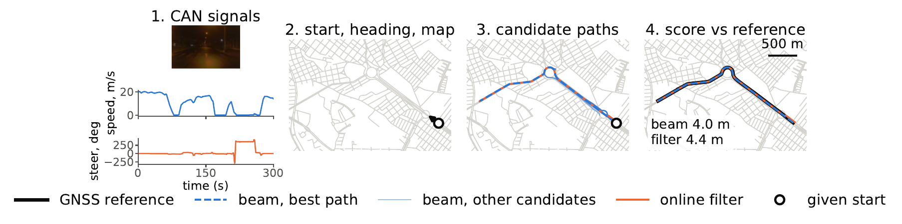
Reconstruction and evaluation of one five-minute window. A method sees the CAN signals, the start, the heading when the protocol gives it and the roads of the visible disc; the offline beam keeps ten candidate paths, the online filter one; every method is scored at the reference seconds (here beam 4.0 m, filter 4.4 m). The camera frame shows the scene and is not an input.
Three priors switch independently (online or offline access, an OpenStreetMap road disc or no map, the start heading given or withheld), giving eight protocols of which the paper reports five; every signal is labelled by its source and GPS-informed software outputs are shown only as a reference, never as CAN-only. An expected window without output is a failure (infinite error, route not recovered), confidence intervals resample drivers, and comparisons are paired on common windows; a paired interval that includes zero is read as no clear evidence either way.
8 protocols · 5 evaluated in the paper
Online or offline, road disc or no map, heading given or withheld: three switches, eight protocols.
The map methods see the OpenStreetMap drive network inside a disc of radius 5 km + 40 m/s × window length around the start (at most 60 km). Windows of 1, 5 and 15 minutes and whole drives are cut from moving anchors; an episode is eligible when at least 80 % of its seconds have a fix, no gap exceeds 30 s and the path is at least 100 m: 98,972 eligible episodes from 3,675 drives.
Protocol codes · O/F online or offline · N/M no map or OpenStreetMap road disc · Hp/Hm start heading given or withheld
access
no map (N)
OpenStreetMap road disc (M)
online (O)
O-N-HpO-N-Hm
O-M-HpO-M-Hm
offline (F)
F-N-HpF-N-Hm
F-M-HpF-M-Hm
Highlighted: the five protocols reported in the paper; the others are defined, not evaluated here. Online: an event becomes visible only after its logged time and the episode length is unknown; offline: all events of the episode are visible, nothing outside it. The start position is always given, except to the two area adaptations (CAN-Trace, SPy), which receive a 5 km square centred on it.
Evaluation drives: 776 of 94 drivers (test 302 / 43, few-shot 474 / 51); five-minute windows 1,917 / 1,963.
6 published attacks re-implemented · 17 method rows
Six published route-inference attacks, re-implemented from their papers, beside the benchmark's own baselines and references.
MacroTracking, OPD-II, Elastic Pathing, CAN-Trace, Dewri et al. and SPy are re-implementations run under the protocol that matches their own assumptions; CAN-Trace and SPy results are our adaptations of their event detector and area prior. The benchmark's baselines are hold start, straight line, steering dead reckoning, a start prior, route retrieval, a learned GRU and a learned physics residual without a map, and a particle filter (2,000 particles) and a beam search (width 200, top 10 paths) with the map. Class F rows use GPS-informed software outputs and are a reference, never CAN-only.
Re-implementation checks: the MacroTracking sample trace matches within a median of 7.1 m; for OPD-II, 8 of 59 public logs are matched within a median of at most 0.33 m; synthetic-network tests cover all six. The 17 method rows of the paper's table are laid out below.
Signal sources are labelled C0 (read from the vehicle bus), C1 (derived from CAN inside the vehicle software), I0 (the logger's raw inertial unit) and F (the driving software's localizer, which used GPS in these software versions; reference only).
What each method is allowed to see
Methods and the information they use · ● used · ◐ optional, used when the protocol gives it · · not used · from the paper's method table
method
speed
steering
pedal
start
heading
map
mode
training data
output
class
Hold start
none
online
none
position
baseline
Straight line
none
online
none
position
baseline
Steering DR
none
online
none / calibrateda
position
baseline
Start prior
none
online
train GPS (statistics)
position
baseline
Route retrieval
none
online
train GPS (routes)
position
baseline
Learned GRU
none / disc
online
train GPS
position
baseline
Learned physics residual
none / disc
online
train GPS
position
baseline
Map PF
disc
online
none
position
baseline
Map beam
disc
offline
none
top-10 paths
baseline
MacroTracking
disc
online
none / calibrateda
position
re-impl.
OPD-II
OSM + map matchinge
delayed ≤ 3 sb
none / calibrateda
position
re-impl.
Elastic Pathing
1 Hz
or areac
disc
offline
val (2 values)
top-n paths
re-impl.
CAN-Trace
areac or
disc
offline
none
top-10 paths
re-impl.
Dewri et al.
1 Hz
or areac
disc
offline
none
top-10 paths
re-impl.
SPy
areac or
disc
offline
val (2 values)
path
re-impl.
Signal-set GRU (S1 to S4)
per set
per set
per set
none / disc
online
train GPS
position
study
Curvature DR (class F)
localizer curvature
none / disc
online
GPS-informedd
position
reference
Swipe the table sideways for the remaining columns; the method column stays in place.
Online methods answer each query from the signals up to that time; "disc" is the episode's visible OpenStreetMap disc. a variant with training-fold steering calibration. b each position is fixed when its 3 s batch is map-matched; a strictly online read-out is also reported. c native prior first, then our adaptations to the shared protocols; "area" is a 5 km square centred on the known start. d the localizer used GPS in the software versions of this data; reference only. e the Meili matcher works within its Valhalla region tiles, 200 m around the dead-reckoned trace, and is not cut to the episode's disc.
Windows and folds
Eligible windows, test / few-shot: 1 min 9,299 / 9,671 · 5 min 1,917 / 1,963 · 15 min 608 / 565 · whole drive 282 / 460.
Drives and drivers per fold · driver-disjoint · episode manifest v1
fold
drives
drivers
train
2,044
206
validation
733
45
test
302
43
few-shot held-out
474
51
unassigned
122
86
Map protocols drop 14 of the 5,795 test and few-shot 5-, 15-minute and whole-drive windows whose start has no drivable road within 400 m (median distance of a start to the nearest road edge 2.6 m), so few-shot map rows have 1,959 / 561 windows at 5 / 15 minutes.
Figure. Eight protocols O/F · N/M · H+/H−; the paper reports five (no-map only online with the heading). Signals are whitelisted per method and labelled by source; GPS-informed software outputs are a reference only. Windows of 1, 5 and 15 minutes and whole drives are cut from moving anchors and eligible when at least 80 % of seconds have a fix, no gap exceeds 30 s and the path is at least 100 m.
04 · RECOVERED WINDOWS
Six windows, drawn in metres from the given start
Six five-minute evaluation windows recovered by the offline beam and the online filter (speed, steering, start and heading known), in the episode frame: metres east and north of the given start, equal aspect, the visible roads in grey. The forward-camera clip covers 24 s around the mid-window frame (window second 150) and is not an input; its speed and steering strips are the CAN signals the methods saw, with each method's error at the same seconds. Pick a window with the tabs; the hero stage hands over to the same clock.
● REC
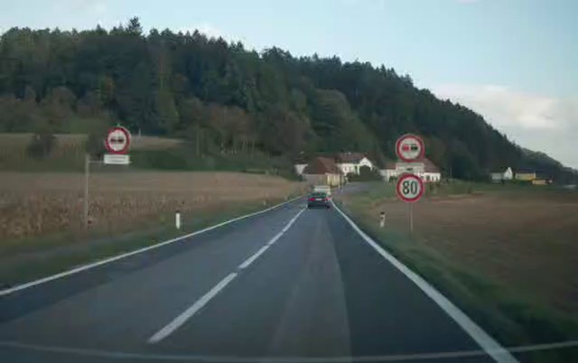
Static view. Mid-window camera frame of window 1 (the camera is not an input).
Static figure. The six windows as typeset in the paper; window 1 is panel 1.
driver_266/drive_002/w05/k001 · test drivers · path 5.1 km · window ADE: beam 1.36 m · filter 2.41 m · clip ex1.mp4, 24 s centred on the mid-window frame (window second 150).
● REC
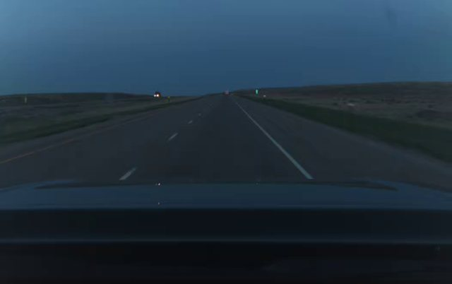
Static view. Mid-window camera frame of window 2 (the camera is not an input).
Static figure. The six windows as typeset in the paper; window 2 is panel 2.
driver_099/drive_007/w05/k114 · test drivers · path 9.3 km · window ADE: beam 3.25 m · filter 5.28 m · clip ex2.mp4, 24 s centred on the mid-window frame (window second 150).
● REC
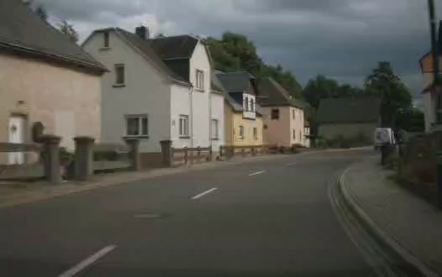
Static view. Mid-window camera frame of window 3 (the camera is not an input).
Static figure. The six windows as typeset in the paper; window 3 is panel 3.
driver_238/drive_001/w05/k001 · few-shot drivers · path 4.1 km · window ADE: beam 3.76 m · filter 4.56 m · clip ex3.mp4, 24 s centred on the mid-window frame (window second 150).
● REC
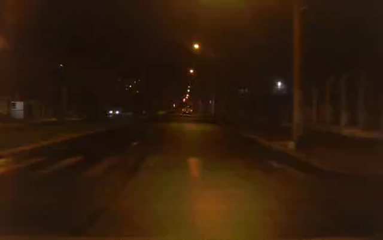
Static view. Mid-window camera frame of window 4 (the camera is not an input).
Static figure. The six windows as typeset in the paper; window 4 is panel 4.
driver_104/drive_002/w05/k024 · few-shot drivers · path 2.9 km · window ADE: beam 4.04 m · filter 4.42 m · clip ex4.mp4, 24 s centred on the mid-window frame (window second 150). Candidate paths of the beam can be toggled on this window.
● REC
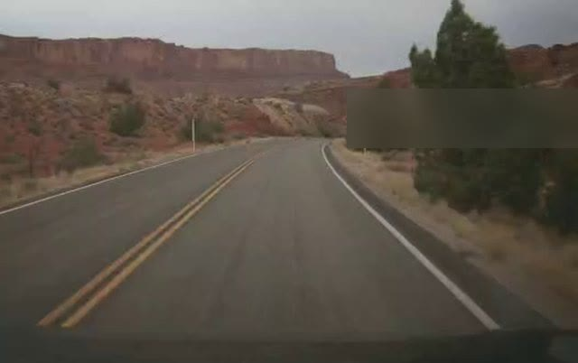
Static view. Mid-window camera frame of window 5 (the camera is not an input).
Static figure. The six windows as typeset in the paper; window 5 is panel 5.
driver_250/drive_014/w05/k002 · few-shot drivers · path 4.3 km · window ADE: beam 5.15 m · filter 5.21 m · clip ex5.mp4, 24 s centred on the mid-window frame (window second 150).
● REC
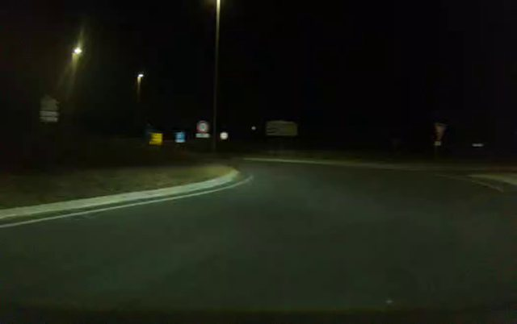
Static view. Mid-window camera frame of window 6 (the camera is not an input).
Static figure. The six windows as typeset in the paper; window 6 is panel 6.
driver_096/drive_001/w05/k000 · test drivers · path 4.8 km · window ADE: beam 5.75 m · filter 11.51 m · clip ex6.mp4, 24 s centred on the mid-window frame (window second 150).
Figure. Six evaluation five-minute windows recovered by the offline beam and the online filter (speed, steering, start and heading known), drawn in metres from the given start with the visible roads in grey; the forward camera clip covers 24 s around the mid-window frame and is not an input. Chosen among windows both methods recover, across densities and turn counts: accurate, not typical cases (medians in the main board). Window ADE: beam / filter 1.36 / 2.41, 3.25 / 5.28, 3.76 / 4.56, 4.04 / 4.42, 5.15 / 5.21, 5.75 / 11.51 m.
05 · METHODS & SIGNALS
With a road map, tens of metres; without one, hundreds
The main board at five minutes: which methods and signals recover a route (RQ1). Switch the evaluation drivers once for every fold-aware chart on this page.
DriversSwitches every chart marked on this page; charts on pooled or other subsets say so in their caption.
37 m · 88 % median five-minute ADE · route recovered · offline beam, speed + steering · test drivers
With the road map, speed and steering, the offline beam recovers 88 % of five-minute test routes at a median error of 37 m [24, 54]; the online filter follows at 43 m [29, 59] and 87 %.
Paired on common windows, the beam's median difference from the filter is −2.7 m [−3.0, −2.0]; OPD-II's paired median difference from the filter is −1.9 m [−3.5, 2.3], no clear evidence either way, while its paired mean error is higher by 116 m [34, 245] and it recovers 79 % of routes. On the few-shot drivers the beam reaches 21 m and 92 %, the filter 27 m and 90 %.
Main board, benchmark v1.1 (2026-10-28); 95 % intervals are driver bootstraps; route recovered = path recall at 50 m ≥ 0.8.
Without a map every CAN-only method drifts far within five minutes: nominal steering dead reckoning has a median error of 921 m [461, 1,742] on the test drivers and recovers 4 % of routes, no better than a straight line at the measured speed (735 m, 9 %); the learned GRU's 543 m is clearly better than dead reckoning only on the few-shot drivers (paired −714 m; on test the paired difference −120 m [−592, 361] includes zero). With the road map, errors fall by more than an order of magnitude (paired map gain −825 m for the steering filter against steering dead reckoning, closer on 89 % of windows): the online particle filter reaches 43 m and the offline beam 37 m.
Among the re-implemented methods, OPD-II is closest to the filter (median 42 m [27, 68], route 79 %); MacroTracking reaches 84 m and 62 %; Elastic Pathing and Dewri et al. reach 87 m and 81 m with the start heading but return no output on 89 and 18 of the test windows; SPy recovers 20 % of routes and CAN-Trace finds 2 matches in 245 pedal-valid windows. On a 46-window controlled supplement (12 other drivers, one vehicle, one area, 27 drives) the order among the steering map methods changes (MacroTracking 19 m, OPD-II 25 m, beam 46 m, filter 75 m), which cautions against reading the ranking as universal.
Main board · test drivers
median ADE (m, log) with 95 % driver-bootstrap CI · route recovered · c100
Headline rows · five-minute windows · test drivers · median ADE [95 % CI] · route recovered
method · protocol
median ADE
route recovered
straight line (speed) · O-N-Hp
735 m
9 %
steering dead reckoning · O-N-Hp
921 m [461, 1,742]
4 %
learned GRU, three seeds · O-N-Hp
543 m
7 %
map filter, speed only · O-M-Hp
286 m
56 %
map beam, speed only · F-M-Hp
165 m
54 %
map filter, speed + steering · O-M-Hp
43 m [29, 59]
87 %
map beam, speed + steering · F-M-Hp
37 m [24, 54]
88 %
MacroTracking · O-M-Hp
84 m
62 %
OPD-II, 3 s delayed · F-M-Hp
42 m [27, 68]
79 %
Elastic Pathing, start heading used · F-M-Hp · 89 fail
87 m [38, 324]
58 %
Dewri et al., start heading used · F-M-Hp · 18 fail
81 m
62 %
Static table. Eleven headline rows of the main board at five minutes on the test drivers; the interactive board lists all rows, folds and horizons.
Figure. Median ADE (m, log scale) with 95 % driver-bootstrap CI, route recovered (path recall at 50 m ≥ 0.8) and c100 (share of seconds within 100 m) on test drivers. Missing outputs count as infinite ADE and zero recovery; start and heading given unless the family says otherwise; learned rows average three seeds; class F uses GPS-informed software outputs and is a reference only. Whole-drive windows have a median duration of 19 min (test) and 11 min (few-shot).
ADE distribution · test drivers
share of expected windows with ADE below x · three panels · a curve ends at one minus the failure rate
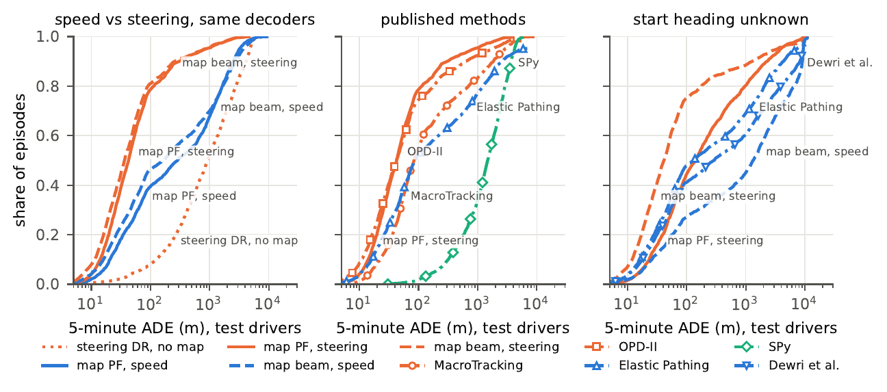
Static figure. The distribution figure as typeset in the paper (test drivers).
Figure. Distribution of the five-minute ADE on test drivers (1,917 / 1,963 expected windows, 1,959 for the map protocols on the few-shot drivers; expected but unanswered windows stay in the denominator, so a curve ends at one minus the failure rate). Hue: method identity (blue speed only, orange speed and steering, green steering only; the four other published methods in their own hues); line style: decoder (solid online filter, dashed offline beam, dotted no map, dash-dot with markers published methods). Elastic Pathing and SPy use the start heading in the middle panel; OPD-II is its 3 s delayed output; CAN-Trace is omitted.
06 · PRIORS & DURATION
What the start heading is worth, and how the error grows with time
Prior information and trip duration (RQ2): the heading matters most in the tail, and the offline search degrades most slowly over fifteen minutes.
Without the start heading the online filter's five-minute median grows from 43 to 138 m (paired −27.5 m [−41.4, −11.3]), while the offline beam moves from 37 to 41 m with a paired median difference of 0.0 m; the heading still matters in the tail, where the beam's paired mean difference is −395 m [−554, −206] and route recovery falls from 88 to 81 %. With speed alone the beam depends strongly on the heading (165 against 1,314 m).
On one cohort of 205 test drives scored 1, 5 and 15 minutes after the same start, OPD-II has the lowest median after one minute (11 m) but the steering beam's median grows least (17, 44 and 303 m against 19, 56 and 672 m for the filter); paired on the same windows the beam avoids some of the filter's largest failures at fifteen minutes (mean difference −552 m [−1,421, −99]), and the speed-only methods are kilometres off. On the pooled 15-minute windows the beam's median ADE is 149 / 106 m (test / few-shot) against the filter's 178 / 127 m; over whole drives it is 1,179 / 94 m.
Horizon cohort · 1 / 5 / 15 min · test drivers
median ADE with driver-resampling 95 % bands · one start per drive · online and offline panels
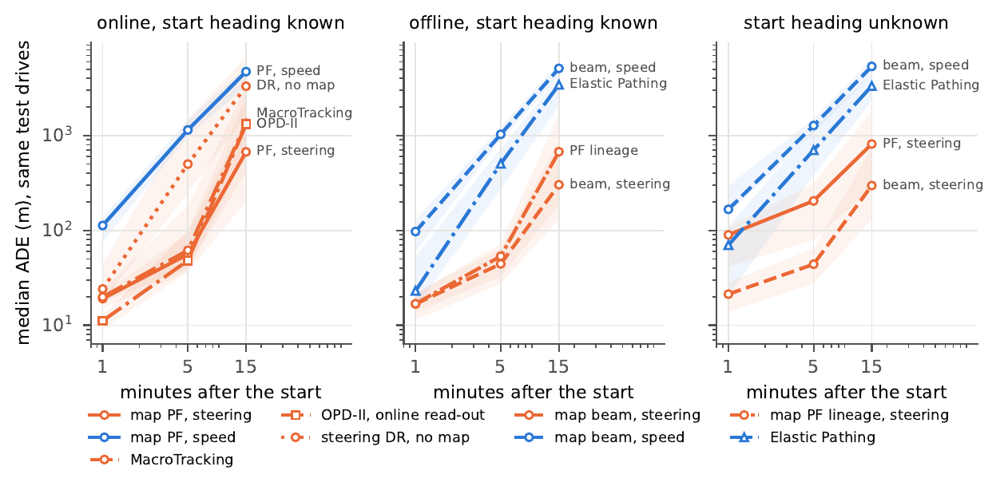
Static figure. The horizon-cohort figure as typeset in the paper (test drivers).
Figure. The same 205 test drives (37 drivers; few-shot: 221 drives, 44 drivers), one start each, scored 1, 5 and 15 minutes after the start: median ADE with driver-resampling 95 % bands. Online methods are scored on prefixes of their 15-minute runs; offline methods are rerun on each prefix with only its signals and map. Encoding as in the distribution chart. This cohort is harder than the pooled 15-minute comparison (filter 178 m there).
07 · SIGNALS & DEGRADED INPUTS
Steering is the signal that matters; coarsening it buys little
A controlled signal study with learner, decoder and drives fixed, and a sweep of the fixed map attacks over degraded inputs.
In a controlled study on 407 five-minute windows from 31 drivers with a continuous accelerator signal, with learner, decoder and drives fixed, adding steering to speed lowers the paired median error by 120 to 234 m across three seeds (every seed's interval excludes zero; set medians 339 → 49 m), whereas adding the continuous pedal changes it by −4.8 to +6.1 m with speed alone (all intervals including zero) and by −6.4 to +0.9 m with steering. A better motion model does not help once the map constrains the path, and a CAN yaw rate or the logger's gyroscope gives no reliable gain over steering.
Steering quantised to 10°, offset by 5° or held at 1 Hz changes the route recovery of the fixed map attacks by at most 1.3 percentage points; speed quantised to 1 m/s changes no route rate measurably (at most 0.7 points, every interval including zero), and even at the harshest levels tested (speed at 5 m/s, steering at 0.2 Hz) the two steering attacks still recover 82.6 % or more of the routes, while the speed-only beam's route rate (54 % on clean signals) does not change measurably. These are sensitivities of fixed attacks, none re-tuned on the degraded signals; they set no protection threshold.
Signal-set study · paired gains
paired median difference in five-minute ADE when one signal is added · one dot per training seed · hollow = interval includes 0
Chart unavailable; the values are listed in the text and table of this section.
Figure. Paired median difference in five-minute ADE when one signal is added, with the learner, decoder and drives fixed (407 windows of 31 evaluation drivers with a continuous accelerator signal; 95 % driver-bootstrap CIs; one dot per training seed). Steering provides the main gain (−120 to −234 m with the map, every interval excluding 0); the continuous pedal changes it by a few metres at most (−4.8 to +6.1 m with speed alone, all intervals including 0; −6.4 to +0.9 m with steering); the pressed flags slightly worsen the speed-only result (+5.2 m [0.8, 10.7]). Shuffling steering multiplies the learner's validation loss by 3.4–3.8; shuffling the pedal changes it by −0.5 to +9.2 %. This subset is harder for speed-based search than the full evaluation groups, so read the gains within the paired study. pooled · 31 evaluation drivers
Degraded inputs · test drivers emphasised
change in five-minute route recovery against the clean signal, percentage points · filled test · hollow few-shot
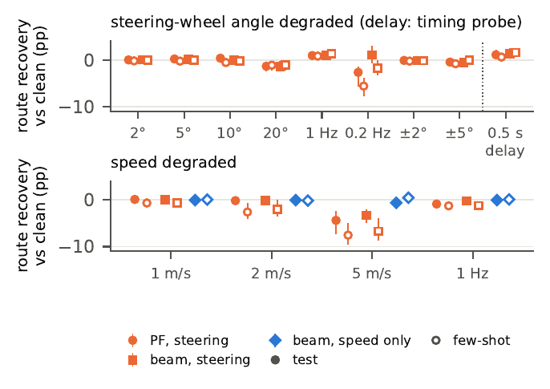
Static figure. The robustness sweep as typeset in the supplementary material.
Figure. Fixed map attacks on degraded inputs: change in the five-minute route recovery rate against the clean signal on the same windows (percentage points; 95 % driver-clustered CIs; filled: test, hollow: few-shot drivers); every level fixed before any run; the 0.5 s delay is a timing probe. None of the attacks was re-tuned on the degraded signals; this bounds what coarsening buys against these attacks, not against an adapted one, and sets no protection threshold. Steering dead reckoning without a map shifts by at most 0.4 m under the same levels.
08 · FAILURES, CANDIDATES & COST
Where the searches fail, what the candidates hold, what it costs
What limits accuracy, robustness and efficiency (RQ3): ranking against search failures, complementary methods, road density, inference cost and the beam's own confidence.
Without steering a good candidate path is often present but ranked low, and more often absent: the speed-only beam's top path has a median error of 1,314 m on the test drivers without the heading, the lowest-error path among its ten candidates 72 m, and that path is ranked first in only 21 % of the windows; with steering the gap closes (41 → 27 m, best first in 54 %). Methods fail on different windows: picking, per window, whichever of ten map methods recovers the route would recover 98 % of test routes against 88 % for the beam (a gain of 10 points [6, 16]), no method recovers 2.3 % of the windows, and this common failure grows from 0.1 % of windows with at most one reference turn to 8.7 % with seven or more; these are facts about the current method set, not about what is recoverable.
The speed-only filter is far worse in denser road networks (73 → 843 m across density tertiles) and the steering methods differ mainly over longer horizons; density is confounded with region, driver, speed and fold, so these are associations. With steering, 73 % of the filter's and 70 % of the beam's 1,169 fifteen-minute windows (folds pooled) end lost, and 43 % and 38 % of those losses begin within 30 s after a reference turn, against 23 % and 22 % if onsets were spread evenly: an association, not a mechanism. Inference is usually inexpensive (per five-minute window, medians from 0.03 s for steering dead reckoning to 0.57 s for the filter, SPy's area search 4.93 s; preparing the road tiles and the Valhalla graph takes 46 and 44 minutes), and the beam's candidate score separates recovered from unrecovered routes no better than chance with steering (AUROC 0.47) but is informative with speed alone (0.81).
Oracle pick among the top-K candidates · test drivers
median ADE of the lowest-error path among the K = 1, 3, 5, 10 highest-ranked candidates · heading known / unknown
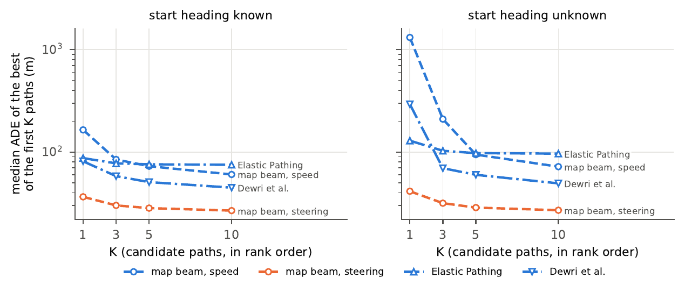
Static figure. The top-K figure as typeset in the supplementary material (test drivers).
Figure. Lowest-error path among the K highest-ranked candidate paths on test drivers. Speed only, heading unknown: top path 1,314 m, within the top three 210 m, within the top ten 72 m, lowest-error path ranked first in 21 % of windows; with steering 41 → 27 m (54 %). Elastic Pathing returns a single path for 1,484 of its 1,855 outputs without the heading (within the top ten 96 m); Dewri et al. 49 m, best first in 39 %.
Window taxonomy at 50 m · test drivers
top-1 within 50 m · lower-ranked candidate within 50 m (ranking failure) · no candidate within 50 m (search failure) · no output
Chart unavailable; the values are listed in the text and table of this section.
Figure. Lowest-error path among the K highest-ranked candidates (median ADE on test drivers) for the offline searches with and without steering, and the split of the windows into top-1 within 50 m, a lower-ranked candidate within 50 m (ranking failure) and no candidate within 50 m (search failure). The top-K gains come from the ranking failures; most speed-only windows have no good candidate at all (speed only, heading unknown: 18 / 24 / 58 %; steering, heading known: 61 / 10 / 28 %).
Road density around the start
median ADE by density tertile · four methods · 5 min filled · 15 min hollow · tail-lost share below
Chart unavailable; the values are listed in the text and table of this section.
Figure. Median five- and fifteen-minute ADE by road density around the start (tertiles at 56 and 246 nodes per km²; test and few-shot pooled; 1,292 five-minute windows per tertile, 33 / 82 / 81 drivers). The speed-only filter is far worse in denser networks (73 → 843 m); the steering methods differ mainly over fifteen minutes (filter 89 → 264 m, beam 77 → 162 m). Density is confounded with region, driver, speed and fold, so these are associations, not effects. pooled · test and few-shot
Methods fail on different windows
Set D (all ten map methods with the start heading), test drivers: the oracle recovers 98 % of windows against the beam's 88 %, a gain of 10 points [6, 16]; set A (steering map methods) 96.9 %, set B (speed only, heading known) 77.7 %, set B′ (speed only, heading unknown) 71.6 %.
Share of five-minute windows no map method recovers, by reference turns: 0–1 turns 0.1 % (2,234 windows) · 2–3 turns 1.4 % (712) · 4–6 turns 5.3 % (528) · 7 or more 8.7 % (402).
Figure. For each five-minute window the most successful of the map methods with the start heading (an oracle) against the beam, the fixed reference, by route recovery; 95 % driver-bootstrap CIs; test and few-shot via the chips. Set D (all ten map methods): 98 % against 88 %, a gain of 10 points [6, 16]; no method recovers 2.3 % [1.4, 3.6] of the windows, and no single method attains the per-window minimum error in more than 22 % of them. The common failure grows with the number of reference turns, from 0.1 % (0–1 turns, 2,234 windows) to 8.7 % (7 or more, 402 windows), pooled over both folds. These are facts about the current method set, not about what is recoverable; the oracle is a diagnostic, not a deployable selector. Per driver (36 test drivers with at least 5 windows) the beam's route share has a median of 88 % and is below one half for 3 % of drivers.
Cost against accuracy
median single-worker inference time per five-minute window · median ADE or route recovered · validation subset
Chart unavailable; the values are listed in the text and table of this section.
Figure. Median single-worker inference time per five-minute window against median ADE on a fixed validation subset of 76 windows (92 with the 15-minute windows), one method at a time; failed searches keep their elapsed time (SPy area: 9 of 76 over budget, 4.93 s median). Map preparation is a separate, one-off cost. Timings are machine-specific (one workstation, 24 threads). Beam with B = 50 and the filter with 500 particles lose little (21 m / 84 %; 24 m / 87 %). validation subset · 76 windows
Does the beam know when it is right? · test drivers
share accepted against route rate among the accepted · thresholds τ 0.3 to 1.0 · heading known / unknown
Chart unavailable; the values are listed in the text and table of this section.
Figure. Accepting only windows whose top candidate's normalised score exceeds a threshold: share accepted against route rate among the accepted (five-minute windows, test drivers). With steering the score separates recovered from unrecovered routes no better than chance (AUROC 0.47 [0.41, 0.52]; 29 % of windows score 1; at τ = 0.9, 46 % of windows are accepted at a route rate of 87 %, 13 % of them wrong); with speed alone the candidates differ and the score is informative (AUROC 0.81; τ = 0.9 accepts 13 % at 97 %). Elastic Pathing and Dewri et al. give a score of 1 to 69 % and 87 % of their outputs. A confidence score, not a calibrated probability.
09 · SELECTING WITH AN LLM
An agent that chooses among reconstructions: no clear advantage over a trained selector
One five-minute window per evaluation drive; a supervised selector and a tool-calling language-model agent pick among the beam, the filter's best lineage and Elastic Pathing.
On one five-minute window per evaluation drive (268 test, 391 few-shot), a supervised selector (B) and a Qwen3-14B tool-calling agent (C) choose among the beam, the filter's best lineage and Elastic Pathing; the beam alone is A. On test drivers route recovery is 69 % for the beam, 75 % for the selector and 75 % for the agent, and the agent-minus-selector difference is 0.1 points [−1.6, 3.4] on test and 0.7 [−2.6, 2.8] on few-shot drivers, so the base agent has no clear advantage over the selector at a serial cost of 36.4 s per window against 1.1 s.
An extended agent with ten reconstructor presets (C+) reaches 78 % on test but only 81 % on few-shot drivers (the base agent: 84 % there), improving over its selector on test by 4.1 points [1.3, 7.6] without extending to the few-shot group (−0.7 [−2.8, 1.6]); an oracle over the available candidates would recover 83 % (three tools) and 87 % (all presets) of test routes. These results concern one model and two configurations.
LLM-agent study · test and few-shot
route recovered with 95 % driver-clustered CIs · reconstructed serial cost per window · paired differences below
Chart unavailable; the values are listed in the text and table of this section.
Figure. Candidate selection on one five-minute window per evaluation drive (268 test windows of 42 drivers; 391 few-shot windows of 50 drivers): beam (A), supervised selector (B), Qwen3-14B tool-calling agent (C, three seeds pooled); B+ and C+: the extended configuration (ten reconstructor presets, comparison and scoring tools, twelve turns). Route recovery with 95 % driver-clustered CIs and the median reconstructed serial cost per window. The agent-minus-selector intervals include 0 on both folds for the base configuration (+0.1 pp [−1.6, 3.4] test; +0.7 [−2.6, 2.8] few-shot); the extended agent's test gain (+4.1 pp [1.3, 7.6]) does not extend to the few-shot group (−0.7 [−2.8, 1.6]). Oracles are diagnostics. One model, two configurations. test and few-shot side by side
10 · ACCESS & REPRODUCIBILITY
Get the data, reproduce the tables
Data, per-episode scores, manifests, map tile lists, configurations, logs and trained weights on Hugging Face; the code, the six re-implementations and every table and figure script on GitHub, under the same license.
On request
CANTraj · data and benchmark package
5,801 CSV files of trimmed GNSS tracks (4.46 GB), the decoded CAN event tables (24.0 GB), the benchmark package with episode manifests, map tile lists, per-episode scores and report tables (0.85 GB); 29.4 GB in all. Research use only, manual approval.
as of 2026-11-09 · gated: manual · DriveDNA research license (research use only)
The benchmark harness, the eight protocols, the baselines and the six re-implementations, every table and figure script, and the trained weights (24 models, 73 files, 3.3 MB). Same license as the data; the repository is being opened with the paper.
Corpus and fold tables, filter and beam settings (2,000 particles, 10 Hz ticks), the re-implementation checks, the degraded-input sweep, the top-K analysis and the agent study in full. Paper under review (2026); no venue is named until the decision.
“Gated, research use only, under the DriveDNA research license; approval is manual.” · “The origin and the destination of a trip are not in the data.”Hugging Face dataset card · fetched 2026-11-09
Reproducibility. The release makes signal sources, map boundaries and missing outputs explicit, and ships the exact episode lists and map versions because earlier checks found incomplete map tiles and excess map visibility: version 1.1 of the benchmark (2026-10-28) changes the maps and the failure accounting; 149 of the 5,111 road tiles had been cut incompletely and were re-cut. A re-run of the map-visibility check reproduces the released positions within 1 m on 100 % of 651 windows from 60 drives; changing the filter's random seed moves 19 % of the five-minute windows by more than that, which is the scale of run-to-run noise to expect.
Read the numbers honestly. Failure of these methods gives no privacy guarantee; the per-window oracle is a diagnostic, not a deployable selector; the degraded-input results hold for fixed, un-adapted attacks and set no protection threshold; density and turn-count effects are associations; the controlled supplement cautions against reading the ranking as universal; the agent results concern one model and two configurations. A paired interval that includes zero is no clear evidence either way, not equivalence.
Figures as printed in the paper
The interactive charts above are drawn from the same result tables; these are the figures as typeset, for comparison.
Pipeline. Reconstruction and evaluation of one five-minute window: camera frame plus CAN speed and steering; start, heading and the roads of the visible disc; the offline beam's ten candidate paths and the online filter's path; scoring against the GNSS reference at the reference seconds. The camera frame shows the scene and is not an input.Recovered windows. Six evaluation five-minute windows recovered by the offline beam (dashed) and the online filter (solid), speed, steering, start and heading known, below their camera frames at mid-window (not an input); grey roads; chosen among windows both methods recover, across densities and turn counts.Distributions. Distribution of the five-minute ADE on the test drivers; expected but unanswered windows stay in the denominator. Hue: signal set; line style: decoder. Panels: speed against steering with the same decoders; published methods; start heading unknown.Horizon cohort. The same test drives, one start each, scored 1, 5 and 15 minutes after the start: median ADE with driver-resampling 95 % bands; online methods scored on prefixes of their 15-minute runs, offline methods rerun on each prefix.Degraded inputs (supplement). Change in the five-minute route recovery rate against the clean signal, percentage points with 95 % driver-clustered CIs (filled test, hollow few-shot): steering quantisation, rate, noise and a timing probe; speed quantisation and rate.Top-K candidates (supplement). Lowest-error path among the K = 1, 3, 5, 10 highest-ranked candidate paths: median ADE of the oracle pick for the offline beam with and without steering, Elastic Pathing and Dewri et al.; panels heading known / unknown.
Sources & notes
11 · CITE
Cite the dataset and the benchmark
The paper is under review (2026); the entry below will be replaced by the final reference once it is published.
BibTeX
@misc{wang2026cantraj,
title = {{CANTraj}: Recovering Vehicle Trajectories from {CAN} Signals in Naturalistic Driving},
author = {Wang, Yuhang and Yang, Jingxin and Wei, Chuheng and Chen, Suyang and Chi, Haozhuang and Zhou, Hao},
year = {2026},
note = {Paper under review. Dataset CANTraj and benchmark CANTraj-Bench:
https://huggingface.co/datasets/HenryYHW/CANTraj; code: https://github.com/WangYuHang-cmd/GPS--CAN}
}
When you use the data, also cite the DriveDNA paper (arXiv:2607.23822), whose research license governs the release:
BibTeX · license paper
@article{wang2026drivedna,
title = {DriveDNA: A Large-Scale Multimodal Naturalistic Driving Dataset and Benchmark for Driving Style Identification},
author = {Wang, Yuhang and Li, Lingyao and Zhou, Hao},
journal = {arXiv preprint arXiv:2607.23822},
year = {2026}
}